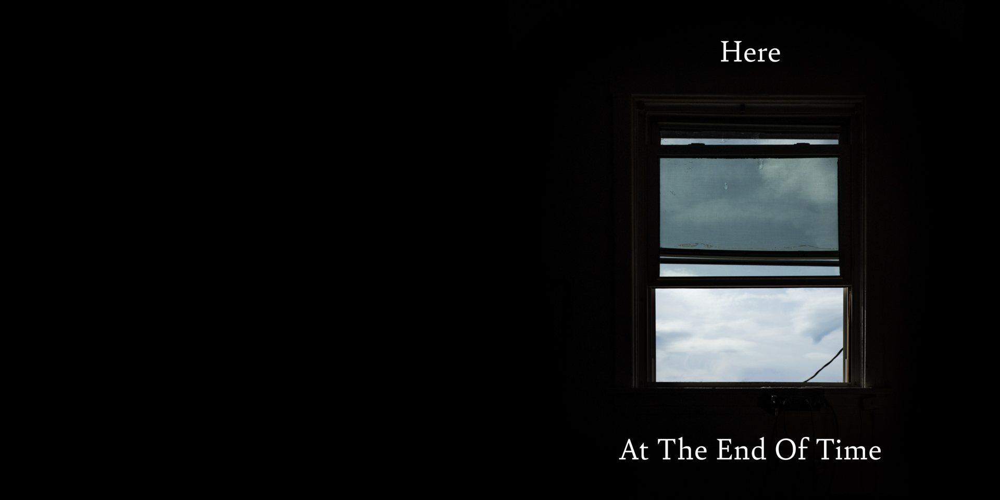
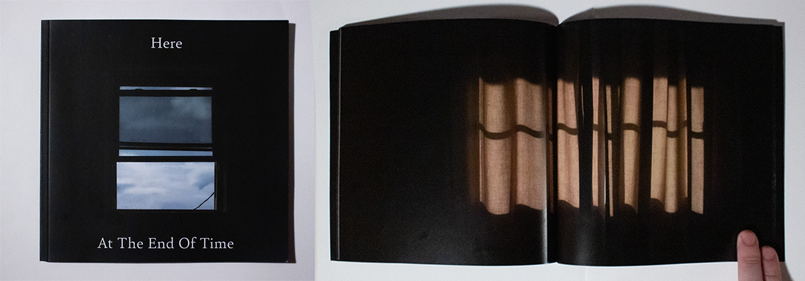
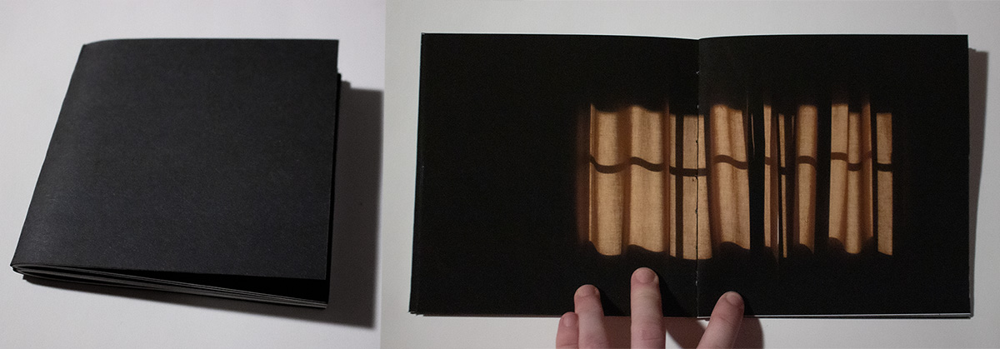
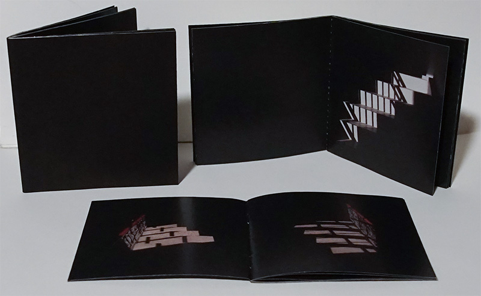

This is the digital version of a one-off photobook, originally printed at a 6" x 6" page size.
This book depicts another world or somewhere else within this one. The patches of sunlight are substanceless but are the only form of being within true emptiness. Nothing moves but the sun sets slowly.
  